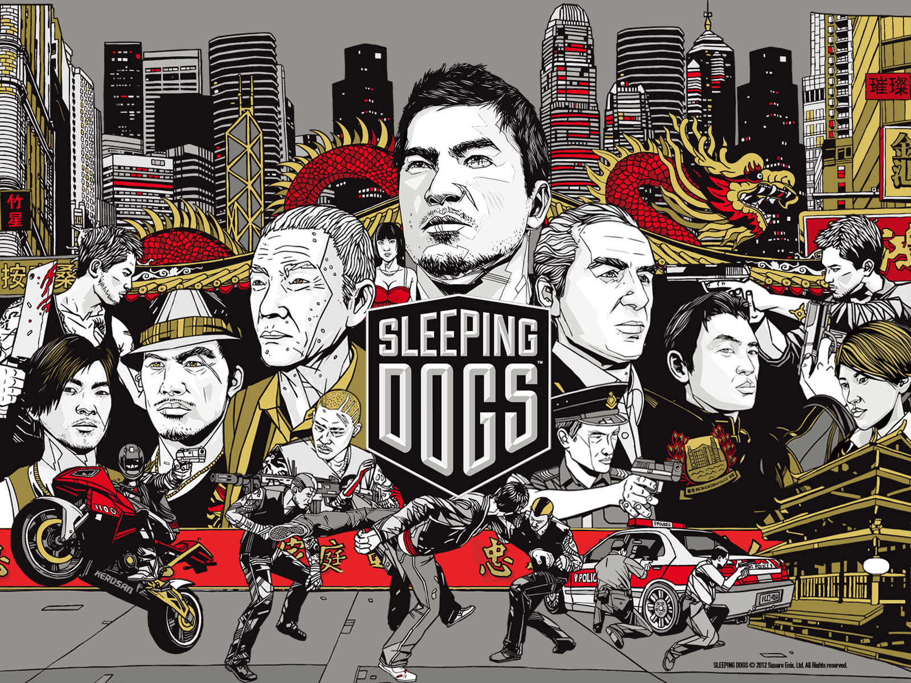
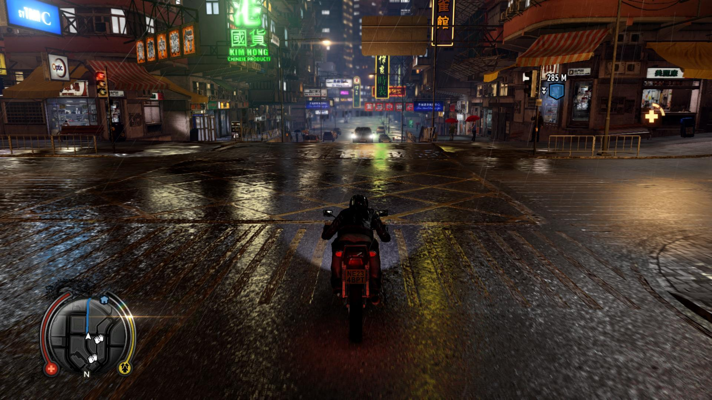
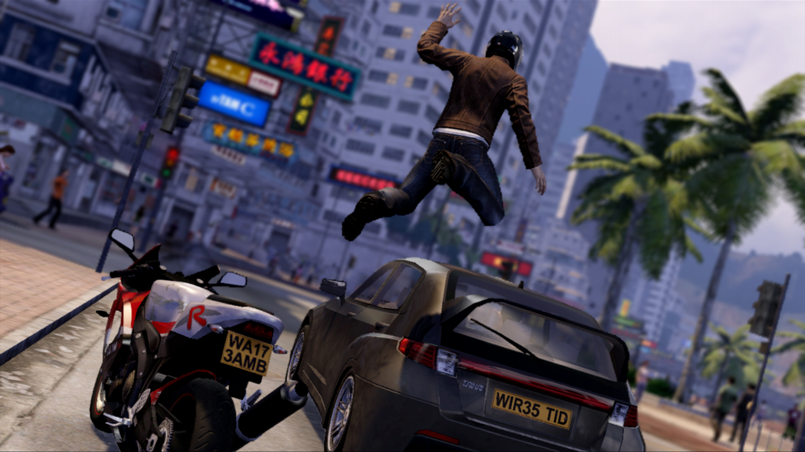
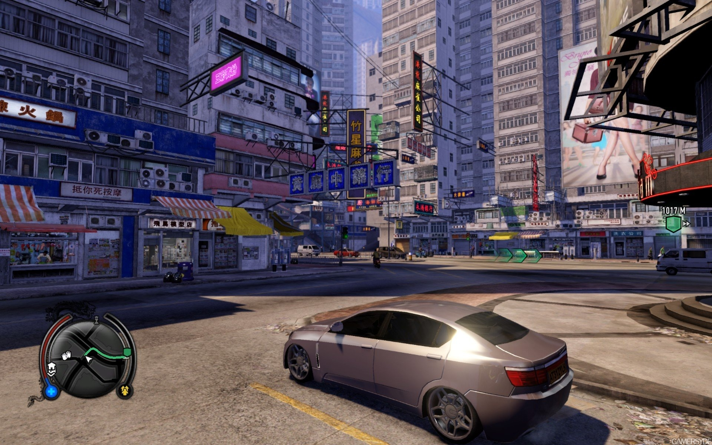
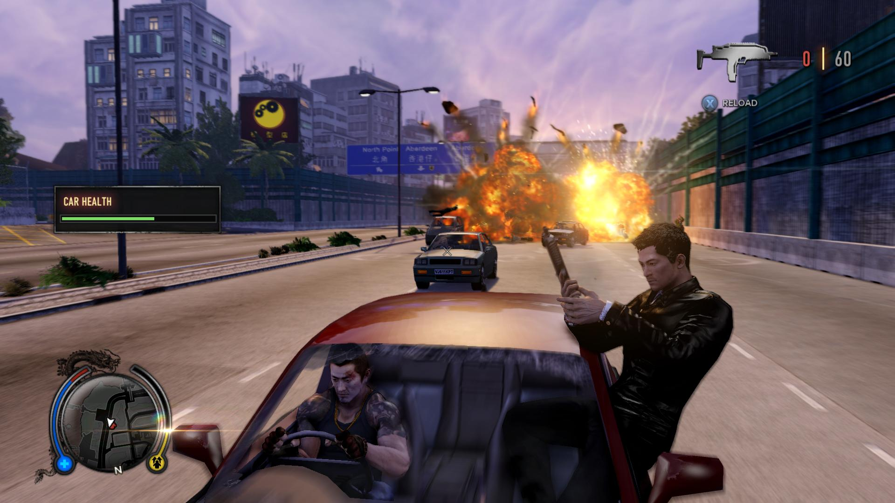

Sleeping Dogs
Игра Sleeping Dogs предлагает игроку взять на себя управление Вэй Шенем (Wei Shen) — гонконгским полицейским под прикрытием. Шень представлен как один из лучших полицейских Гонконга: мастер боевых искусств, хороший водитель, стрелок, человек, обладающий высоким интеллектом и способностью «мимикрировать» под преступника. Родился в Гонконге, но позже переехал в Сан-Франциско, США, а потом вернулся домой. В ходе начальной миссии Шень попадает в полицейский участок, где встречается с Джеки Ма, своим другом детства, ныне являющимся членом бандитской группировки Water Street. Впоследствии выясняется, что настоящая цель Вэя Шеня — внедрение в одну из крупнейших гонконгских банд Сун-он-йи (банда основана на реально существующей Сунъион) и развалить преступную сеть изнутри[1]. Завоевав доверие Уинстона Чу, лидера («красного шеста» в китайской преступной терминологии) «банды с Водяной улицы» (Water street) — одной из подгрупп Сун-он-йи, Шень становится полноправным членом банды.

Бандитская линия построена на противостоянии двух группировок — банды с Водяной улицы Уинстона Чу и банды Джейд Сэма Лина по прозвищу «Псиный глаз». Псиный глаз нападает на китайский ресторан, принадлежащий матери Уинстона Чу. Чу руками Шэня и других бандитов мстит Псиному глазу и сжигает одно из главных предприятий, находящихся под его контролем. Авторитет и известность Вэй Шэня стремительно растут. Уинстон Чу знакомит его с Дэвидом Вай-Линем по прозвищу «Дядюшка По» — «головой дракона», то есть верховным боссом Сун-он-йи. Дядюшка По высказывает восхищение работой Шеня. Предчувствуя неладное, Уинстон Чу просит Шеня занять его место, в случае необходимости.
Псиный глаз нападает на банду с Водяной улицы во время свадьбы Уинстона Чу. Начинается кровавая перестрелка, Уинстон и его невеста Пегги убиты. Своими последними словами Чу ставит Шеня во главе банды. Шеню удается спасти Дядюшку По, также присутствовавшего на свадьбе и раненого в перестрелке, и отвести его в больницу, отстреливаясь от бандитов Псиного глаза. Дядюшка По подтверждает статус «красного шеста» Вэя Шеня. Мать Уинстона Чу хочет отомстить за смерть сына. Шень притаскивает Псиного глаза в ресторан миссис Чу, та убивает его. Дядюшка По умирает в больнице. После его смерти собираются «красные шесты» Сун-он-йи, встает вопрос, кто станет новым лидером всей огромной банды. Основные конкуренты — Генри «Весельчак» Ли, «Кривоносая» Цзянь и Говард «Жирный» Цао. Вэй занимает сторону Цзянь. Первоначально на место Дядюшки По Цзянь предложила Цао, но тот отказался после того, как Шень разграбил особняк Цао. Начинается настоящая бандитская война, на начальном этапе которой значительное преимущество в силе и авторитете внутри банды имеет Генри Ли. Шень получает приказ от своего начальника, старшего инспектора полиции Гонконга Томаса Пендрю прекратить работу по этому делу. Но Вэй, очень плотно втянутый в бандитские разборки, не исполняет приказ. Тогда Пендрю сдает Шеня «Весельчаку» Ли. Тот решает использовать полученную информацию против своей основной противницы — «Кривоносой» Цзянь на предстоящих выборах главы банды.
Ли захватывает друга Вэя, Джеки Ма. Шень ищет Ма, но находит его труп. Более того, бандиты похищают и самого Шеня. Лю Шен Тун, убийца из банды «Весельчака», пытает Шеня, но тому удается убить Туна и отомстить за Джеки. Дальше Шень в одиночку идет на людей Ли. Ему удается перебить их, но сам Ли сбегает. Шень догоняет его и убивает, сбросив в машину для измельчения льда.
После смерти Ли Шень становится главным кандидатом на место «головы дракона», но, не желая оставлять службу в полиции, он отказывается. Новым лидером Сун-он-йи становится «Кривоносая» Цзянь. Вэю удается собрать компромат на своего шефа, Пендрю, а также выяснить, что именно он убил Дядюшку По, введя тому в больнице большую дозу сильнодействующего снотворного. Пендрю арестовывают. Наблюдая за Вэем Шенем, «Кривоносая» Цзянь видит как тот разговаривает с инспектором полиции Тэн, понимая, что Шень действительно агент под прикрытием. Кодекс Триад велит Цзянь убить Шеня как предателя, но она отпускает его, оставляя в живых.